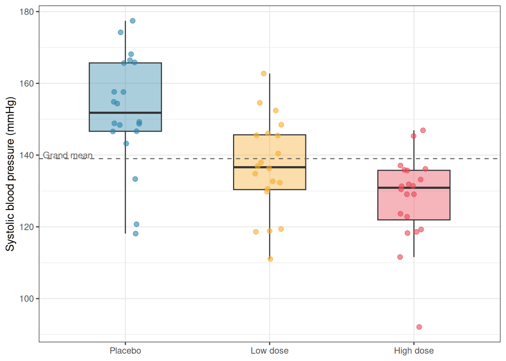
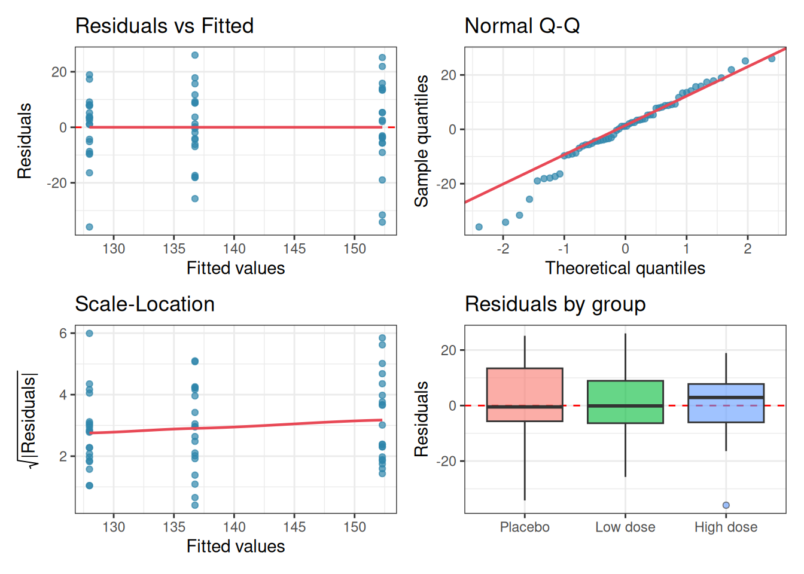
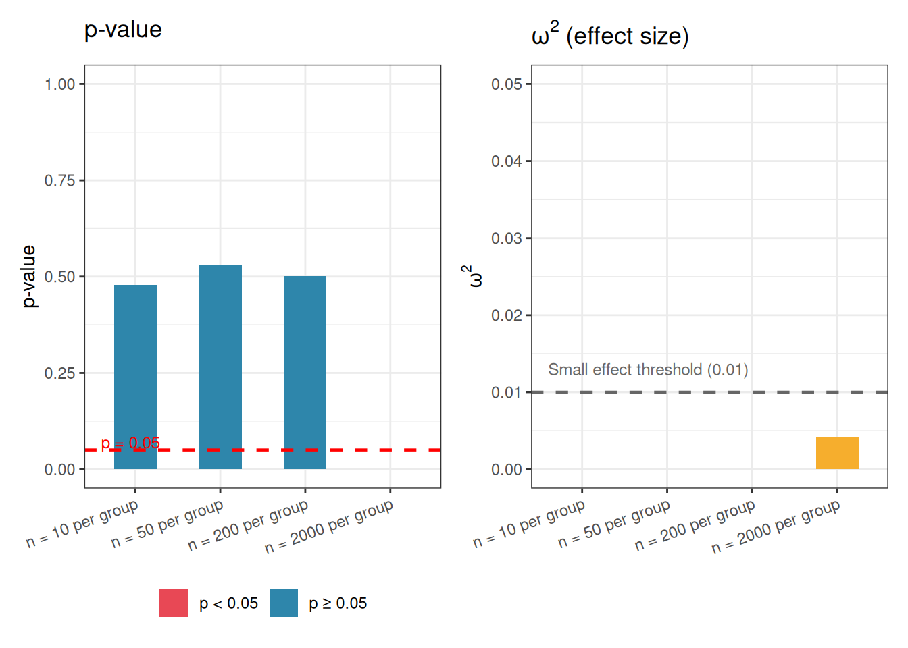
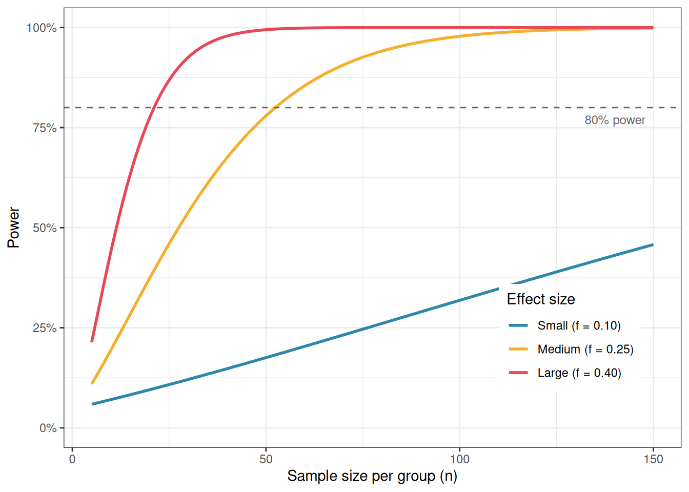

summary(systolic) bp group
Min. : 92.08 Placebo :20
1st Qu.:129.61 Low dose :20
Median :136.62 High dose:20
Mean :139.01
3rd Qu.:148.76
Max. :177.44 The analysis of variance is not a mathematical theorem, but rather a convenient method of arranging the arithmetic.
— Ronald A. Fisher
One-way ANOVA is the simplest member of the ANOVA family: one response variable, one categorical predictor, any number of groups. Despite its simplicity, it contains all the essential ideas, variance decomposition, the \(F\) ratio, effect sizes, power, that carry forward into every more complex design. Mastering it thoroughly is therefore time well spent.
This chapter builds the one-way ANOVA from its mathematical foundations, works through a complete clinical example from raw data to interpretation, and then addresses two questions that are too often skipped: how large is the effect, and did the experiment have enough observations to detect it?
The one-way ANOVA model states that every observation \(y_{ij}\), the \(i\)th observation in group \(j\), can be written as:
\[y_{ij} = \mu + \alpha_j + \varepsilon_{ij}\]
where:
The null hypothesis is that all treatment effects are zero:
\[H_0: \alpha_1 = \alpha_2 = \cdots = \alpha_k = 0\]
which is equivalent to saying that all group means are equal:
\[H_0: \mu_1 = \mu_2 = \cdots = \mu_k\]
The alternative hypothesis is that at least one \(\alpha_j \neq 0\), at least one group mean differs from the others.
The key operation in ANOVA is to split the total variation in the data into two additive components. For any observation \(y_{ij}\), its departure from the grand mean \(\bar{y}\) can be written as:
\[\underbrace{y_{ij} - \bar{y}}_{\text{total deviation}} = \underbrace{(\bar{y}_j - \bar{y})}_{\text{among-group deviation}} + \underbrace{(y_{ij} - \bar{y}_j)}_{\text{within-group deviation}}\]
Squaring and summing across all observations turns these deviations into sums of squares (SS):
\[SS_{\text{total}} = SS_{\text{among}} + SS_{\text{within}}\]
where:
\[SS_{\text{total}} = \sum_{j=1}^{k}\sum_{i=1}^{n_j}(y_{ij} - \bar{y})^2\]
\[SS_{\text{among}} = \sum_{j=1}^{k} n_j(\bar{y}_j - \bar{y})^2\]
\[SS_{\text{within}} = \sum_{j=1}^{k}\sum_{i=1}^{n_j}(y_{ij} - \bar{y}_j)^2\]
\(SS_{\text{among}}\) measures how far the group means stray from the grand mean: it captures the treatment effect plus any chance variation among group means. \(SS_{\text{within}}\) measures the scatter of observations around their own group mean: it captures residual variation only.
A sum of squares is not yet a variance, it grows automatically as the number of observations increases, which would make comparisons across studies meaningless. To obtain proper variance estimates, we divide each sum of squares by its degrees of freedom:
\[MS_{\text{among}} = \frac{SS_{\text{among}}}{k - 1}\]
\[MS_{\text{within}} = \frac{SS_{\text{within}}}{N - k}\]
where \(N = \sum_{j=1}^k n_j\) is the total number of observations. The degrees of freedom deserve a moment’s thought:
\(MS_{\text{within}}\) is an unbiased estimate of \(\sigma^2\) regardless of whether \(H_0\) is true. \(MS_{\text{among}}\) estimates \(\sigma^2\) only when \(H_0\) is true; when the treatment has a real effect, it estimates \(\sigma^2 + \frac{\sum n_j \alpha_j^2}{k-1}\), a quantity larger than \(\sigma^2\) by an amount proportional to the true treatment effects.
The \(F\) ratio is the natural consequence of everything above:
\[F = \frac{MS_{\text{among}}}{MS_{\text{within}}}\]
When \(H_0\) is true, both the numerator and denominator estimate \(\sigma^2\), and \(F\) fluctuates around 1. When the treatment has a real effect, the numerator grows while the denominator stays anchored to \(\sigma^2\), and \(F\) climbs above 1. Under \(H_0\), this ratio follows an \(F\)-distribution with \(k-1\) and \(N-k\) degrees of freedom, written \(F_{k-1,\, N-k}\).
The results are conventionally summarised in an ANOVA table:
| Source | SS | df | MS | F | p |
|---|---|---|---|---|---|
| Among groups | \(SS_{\text{among}}\) | \(k-1\) | \(MS_{\text{among}}\) | \(F\) | \(p\) |
| Within groups | \(SS_{\text{within}}\) | \(N-k\) | \(MS_{\text{within}}\) | ||
| Total | \(SS_{\text{total}}\) | \(N-1\) |
A clinical trial is investigating the effect of three treatments on systolic blood pressure (bp in mmHg) in patients with mild hypertension (Section B.1.2). Patients are randomly assigned to one of three groups (group): a control group receiving a placebo (Placebo), a group receiving a low-dose antihypertensive drug (Low dose), and a group receiving a high-dose antihypertensive drug (High dose). After eight weeks, systolic blood pressure is measured for each patient. There are 20 patients per group, giving \(N = 60\) observations in total.
The starting assumption is that the three treatments produce the same mean blood pressure. The question is whether the data give us sufficient reason to doubt this.
First, we always look at the data before fitting any model.
summary(systolic) bp group
Min. : 92.08 Placebo :20
1st Qu.:129.61 Low dose :20
Median :136.62 High dose:20
Mean :139.01
3rd Qu.:148.76
Max. :177.44 A combination of a boxplot and the individual observations gives a much richer picture than summary statistics alone:
library(ggplot2)
grand_mean <- mean(systolic$bp)
ggplot(systolic, aes(x = group, y = bp, fill = group)) +
geom_boxplot(alpha = 0.4, outlier.shape = NA, width = 0.5) +
geom_jitter(width = 0.1, size = 2, alpha = 0.6, aes(colour = group)) +
geom_hline(yintercept = grand_mean, linetype = "dashed", colour = "grey40") +
annotate("text", x = 0.6, y = grand_mean + 1, label = "Grand mean", size = 3.2, colour = "grey40") +
scale_fill_manual(values = c("#2E86AB", "#F6AE2D", "#E84855")) +
scale_colour_manual(values = c("#2E86AB", "#F6AE2D", "#E84855")) +
labs(x = NULL, y = "Systolic blood pressure (mmHg)") +
theme_bw() +
theme(legend.position = "none")
Before fitting the model, we run the diagnostic workflow introduced in Chapter 2. Here we fit the model first in order to extract residuals, then inspect them:
fit <- aov(bp ~ group, data = systolic)
anova_diagnostics(fit, systolic)
--- Shapiro-Wilk test (normality of residuals) ---
Shapiro-Wilk normality test
data: res
W = 0.96761, p-value = 0.1114
--- Levene's test (homogeneity of variance) ---
Levene's Test for Homogeneity of Variance (center = median)
Df F value Pr(>F)
group 2 0.7068 0.4975
57
--- Diagnostic summary ---
Sample size (smallest group): 20
Shapiro-Wilk p = 0.1114 -> No evidence against normality.
Levene's p = 0.4975 -> No evidence against homoscedasticity.The Q-Q plot shows residuals lying close to the diagonal, the residual boxplots show similar spreads across groups, and neither the Shapiro-Wilk nor Levene’s test raises any concern. We proceed with standard one-way ANOVA.
The output looks like this:
summary(fit) Df Sum Sq Mean Sq F value Pr(>F)
group 2 6066 3032.8 15.79 3.5e-06 ***
Residuals 57 10949 192.1
---
Signif. codes: 0 '***' 0.001 '**' 0.01 '*' 0.05 '.' 0.1 ' ' 1Let us read this table carefully, column by column.
A complete report of a one-way ANOVA result should include the F statistic, both degrees of freedom, and the p-value:
One-way ANOVA revealed a significant effect of treatment on systolic blood pressure (\(F_{2,57} = 15.79\), \(p < 0.001\)).
Note, however, that this tells us only that the groups differ, not which specific groups differ from which. Post-hoc tests for pairwise comparisons are covered in Chapter 5.
A significant \(p\)-value tells you that the observed differences among groups are unlikely to be due to chance. It does not tell you how large those differences are. This distinction matters enormously in practice. With a large enough sample, even a trivially small treatment effect will produce a highly significant \(p\)-value. With a small sample, a clinically meaningful effect may fail to reach significance. The \(p\)-value conflates the size of the effect with the size of the study.
Effect sizes separate these two things. They quantify how much of the variation in the response is explained by the treatment, on a scale that does not depend on sample size.
Before moving to effect sizes formally, it is worth pausing to see concretely why the \(p\)-value alone is insufficient for scientific interpretation. The following simulation demonstrates the problem directly.
We generate data from three groups whose means differ by a clinically trivial amount, just 1 mmHg in blood pressure between groups, against a within-group standard deviation of 12 mmHg. Nobody would consider a 1 mmHg difference between treatments to be meaningful.
We then run the same one-way ANOVA at four different sample sizes and observe what happens to the \(p\)-value and the effect size as \(n\) grows.
library(effectsize)
set.seed(42)
# Trivial difference: 1 mmHg between groups, SD = 12
means <- c(150, 151, 152)
sd_common <- 12
ns <- c(10, 50, 200, 2000)
results <- lapply(ns, function(n) {
group <- factor(rep(c("Placebo", "Low dose", "High dose"), each = n), levels = c("Placebo", "Low dose", "High dose"))
bp <- c(
rnorm(n, mean = means[1], sd = sd_common),
rnorm(n, mean = means[2], sd = sd_common),
rnorm(n, mean = means[3], sd = sd_common)
)
df <- data.frame(bp, group)
fit <- aov(bp ~ group, data = df)
p_val <- summary(fit)[[1]][["Pr(>F)"]][1]
omega2 <- omega_squared(fit, partial = FALSE)$Omega2
data.frame(
n = n,
p_val = p_val,
omega2 = omega2
)
})
results_df <- do.call(rbind, results)
results_df$n_label <- paste0("n = ", results_df$n, " per group")
results_df$n_label <- factor(results_df$n_label, levels = paste0("n = ", ns, " per group"))
results_df$significant <- ifelse(results_df$p_val < 0.05, "p < 0.05", "p ≥ 0.05")results_df n p_val omega2 n_label significant
1 10 4.787806e-01 0.000000000 n = 10 per group p ≥ 0.05
2 50 5.304923e-01 0.000000000 n = 50 per group p ≥ 0.05
3 200 5.005470e-01 0.000000000 n = 200 per group p ≥ 0.05
4 2000 1.466471e-06 0.004137075 n = 2000 per group p < 0.05library(ggplot2)
# Plot p-values
p1 <- ggplot(results_df, aes(x = n_label, y = p_val, fill = significant)) +
geom_col(width = 0.5) +
geom_hline(yintercept = 0.05, linetype = "dashed", colour = "red", linewidth = 0.8) +
annotate("text", x = 0.6, y = 0.07, label = "p = 0.05", colour = "red", size = 3.2, hjust = 0) +
scale_fill_manual(values = c("p < 0.05" = "#E84855", "p ≥ 0.05" = "#2E86AB")) +
scale_y_continuous(limits = c(0, 1)) +
labs(title = "p-value", x = NULL, y = "p-value", fill = NULL) +
theme_bw() +
theme(legend.position = "bottom", axis.text.x = element_text(angle = 20, hjust = 1))
# Plot omega-squared
p2 <- ggplot(results_df, aes(x = n_label, y = omega2)) +
geom_col(width = 0.5, fill = "#F6AE2D") +
geom_hline(yintercept = 0.01,
linetype = "dashed", colour = "grey40", linewidth = 0.8) +
annotate("text", x = 0.6, y = 0.013,
label = "Small effect threshold (0.01)",
colour = "grey40", size = 3.2, hjust = 0) +
scale_y_continuous(limits = c(0, 0.05)) +
labs(title = expression(omega^2~"(effect size)"),
x = NULL, y = expression(omega^2)) +
theme_bw() +
theme(axis.text.x = element_text(angle = 20, hjust = 1))
library(patchwork)
p1 + p2
The results make the problem vivid. With \(n = 10\) per group the \(p\)-value is large and the result is non-significant but not because the effect is small but simply because the study is underpowered. It is only with \(n = 2000\) per group that the result is declared significant and at that point the \(p\)-value is vanishingly small, suggesting to anyone reading only that number that something important has been found.
Yet \(\omega^2\) tells a completely different story. Across all four sample sizes, the effect size hovers near zero, well below even the conventional threshold for a small effect. The treatment explains less than 1% of the variation in blood pressure at every sample size. The 1 mmHg difference between groups is real in a narrow statistical sense, it is consistently detected once the sample is large enough, but it is scientifically and clinically meaningless. What changed between \(n = 200\) and \(n = 2000\) was not the biology. It was simply the resolving power of the microscope.
The lesson is not that \(p\)-values are useless. They answer a specific and legitimate question: given the data, how surprising would this result be if there were no effect? But that question is not the same as how large is the effect? A \(p\)-value cannot tell you whether a significant result matters. Only an effect size can do that.
This is why the rest of this chapter treats effect sizes not as an optional supplement to the ANOVA table but as an essential part of every analysis.
The simplest effect size for ANOVA is \(\eta^2\) (eta-squared), defined as the proportion of total variation explained by the treatment:
\[\eta^2 = \frac{SS_{\text{among}}}{SS_{\text{total}}}\]
It ranges from 0 (treatment explains none of the variation) to 1 (treatment explains all of it). For our clinical example:
ss_among <- summary(fit)[[1]]["group", "Sum Sq"]
ss_total <- sum(summary(fit)[[1]]["Sum Sq"])
eta2 <- ss_among / ss_total
cat("eta² =", eta2, "\n")eta² = 0.3564937 \(\eta^2 = 0.356\) means that 35.6% of the total variation in blood pressure is explained by treatment group, a large effect by any standard.
The weakness of \(\eta^2\) is that it is a biased estimate of the true population effect size: it tends to overestimate how much of the variation in the population is explained by the treatment, because it is computed from the same data used to fit the model.
\(\omega^2\) (omega-squared) corrects for this bias and is generally preferred when reporting results:
\[\omega^2 = \frac{SS_{\text{among}} - (k-1) \cdot MS_{\text{within}}} {SS_{\text{total}} + MS_{\text{within}}}\]
k <- nlevels(systolic$group)
ms_w <- summary(fit)[[1]]["Residuals", "Mean Sq"]
omega2 <- (ss_among - (k - 1) * ms_w) / (ss_total + ms_w)
cat("omega² =", omega2, "\n")omega² = 0.3301868 \(\omega^2\) is expected to be slightly smaller than \(\eta^2\), and the difference is largest with small samples. With \(N = 60\) the correction here is modest, but with \(N = 15\) or \(N = 20\) it can be substantial.
Always report \(\omega^2\) rather than \(\eta^2\) when the sample is small.
Conventional benchmarks for both \(\eta^2\) and \(\omega^2\), originally proposed by Cohen (1988), are:
| Effect size | Small | Medium | Large |
|---|---|---|---|
| \(\eta^2\), \(\omega^2\) | 0.01 | 0.06 | 0.14 |
These are rough guides, not rigid rules. What constitutes a meaningful effect depends entirely on the scientific context. A drug that explains 5% of variation in blood pressure across a population might represent an enormous public health benefit; the same effect size in a laboratory assay might be scientifically uninteresting.
Cohen’s \(f\) is an alternative effect size that expresses the treatment effect as the ratio of the standard deviation of group means to the common within-group standard deviation:
\[f = \sqrt{\frac{\eta^2}{1 - \eta^2}}\]
Cohen’s \(f\) is less intuitive than \(\eta^2\) or \(\omega^2\) but is the effect size used by most power analysis software, including the pwr package in R. Conventional benchmarks are \(f = 0.10\) (small), \(f = 0.25\) (medium), and \(f = 0.40\) (large) (Cohen 1988).
effectsize
Rather than computing these by hand, the effectsize package provides clean, well-documented functions with confidence intervals:
# install.packages("effectsize") if needed
library(effectsize)
eta_squared(fit, partial = FALSE)# Effect Size for ANOVA (Type I)
Parameter | Eta2 | 95% CI
-------------------------------
group | 0.36 | [0.19, 1.00]
- One-sided CIs: upper bound fixed at [1.00].omega_squared(fit, partial = FALSE)# Effect Size for ANOVA (Type I)
Parameter | Omega2 | 95% CI
---------------------------------
group | 0.33 | [0.16, 1.00]
- One-sided CIs: upper bound fixed at [1.00].cohens_f(fit)For one-way between subjects designs, partial eta squared is equivalent
to eta squared. Returning eta squared.# Effect Size for ANOVA
Parameter | Cohen's f | 95% CI
-----------------------------------
group | 0.74 | [0.48, Inf]
- One-sided CIs: upper bound fixed at [Inf].Always report effect sizes alongside \(p\)-values. A result reported as “\(F_{2,57} = 21.34\), \(p < 0.001\), \(\omega^2 = 0.36\)” tells a much more complete scientific story than the \(p\)-value alone.
The \(F\) test can make two kinds of error.
A Type I error occurs when you reject \(H_0\) when it is actually true: a false positive. The probability of a Type I error is \(\alpha\), the significance threshold you set in advance (conventionally 0.05).
A Type II error occurs when you fail to reject \(H_0\) when it is actually false: a false negative. The probability of a Type II error is denoted \(\beta\).
Statistical power is \(1 - \beta\): the probability that your test will detect a real effect if one exists. A study with power of 0.80 has an 80% chance of finding a significant result when the treatment truly has an effect of the specified size.
Power depends on four quantities that are mathematically linked:
\[\text{Power} = f(\alpha,\, n,\, k,\, f)\]
If you fix any three of these quantities, the fourth is determined. This is the basis of power analysis.
The most important use of power analysis is prospective: before collecting data, to determine how many observations per group are needed to detect an effect of a given size with adequate power. This requires you to specify:
In R, the pwr package handles this calculation:
# install.packages("pwr") if needed
library(pwr)
# How many observations per group do we need to detect a medium effect
# (f = 0.25) with 80% power at alpha = 0.05, with k = 3 groups?
pwr.anova.test(k = 3, f = 0.25, sig.level = 0.05, power = 0.80)
Balanced one-way analysis of variance power calculation
k = 3
n = 52.3966
f = 0.25
sig.level = 0.05
power = 0.8
NOTE: n is number in each groupThe output show that approximately 52 observations per group, 156 in total, are needed to detect a medium effect with 80% power in a three-group design. For a large effect (\(f = 0.40\)), this drops to around 21 per group; for a small effect (\(f = 0.10\)), it rises to over 320 per group.
It is more informative to visualise how power changes across a range of sample sizes for different effect sizes, rather than reading off a single number:
library(ggplot2)
library(pwr)
ns <- seq(5, 150, by = 1)
f_vals <- c(0.10, 0.25, 0.40)
labels <- c("Small (f = 0.10)", "Medium (f = 0.25)", "Large (f = 0.40)")
power_df <- do.call(rbind, lapply(seq_along(f_vals), function(j) {
data.frame(
n = ns,
power = sapply(ns, function(n) {
pwr.anova.test(k = 3, n = n, f = f_vals[j], sig.level = 0.05)$power
}),
effect = labels[j]
)
}))
power_df$effect <- factor(power_df$effect, levels = labels)
ggplot(power_df, aes(x = n, y = power, colour = effect)) +
geom_line(linewidth = 1) +
geom_hline(yintercept = 0.80, linetype = "dashed", colour = "grey40") +
annotate("text", x = 148, y = 0.77, label = "80% power", size = 3.2, colour = "grey40", hjust = 1) +
scale_colour_manual(values = c("#2E86AB", "#F6AE2D", "#E84855")) +
scale_y_continuous(limits = c(0, 1), labels = scales::percent_format(accuracy = 1)) +
labs(
x = "Sample size per group (n)",
y = "Power",
colour = "Effect size"
) +
theme_bw() +
theme(legend.position = "inside", legend.position.inside = c(0.82, 0.25))
Specifying the expected effect size is the hardest part of power analysis, and it is where many researchers go wrong. There are three defensible approaches.
From prior literature. If previous studies have measured the same response with the same or similar treatments, use their reported effect sizes. Be aware, however, that published effect sizes are subject to publication bias: studies with larger effects are more likely to be published, so the literature tends to overestimate true effect sizes. Apply some conservatism.
From a pilot study. A small preliminary experiment can provide a rough estimate of within-group variance \(\sigma\) and the expected differences among group means, from which \(f\) can be calculated. Pilot-based effect sizes are noisy but grounded in your specific system.
From the minimally meaningful effect. Ask: what is the smallest difference among group means that would be scientifically or clinically meaningful? For example, in the blood pressure trial, a difference of 5 mmHg between groups might be the smallest reduction considered clinically relevant. Combined with an estimate of within-group standard deviation (from the literature or from clinical experience), this gives a concrete, defensible effect size to power the study for.
Using Cohen’s conventional benchmarks (small, medium, large) as a substitute for genuine subject-matter knowledge is the least satisfactory approach, but it is better than no power analysis at all.
It is tempting, after a non-significant result, to compute the power of the completed study post hoc, to ask whether the experiment was large enough to detect the effect that was observed. This is called retrospective or post hoc power analysis, and it is generally not informative. When the observed effect size is used to compute power, a non-significant result will always produce low estimated power, and a significant result will always produce high estimated power. The calculation is entirely circular and adds nothing to what the \(p\)-value already tells you.
If a study yields a non-significant result and you want to know whether a meaningful effect might have been missed, the right tool is a confidence interval around the effect size, not a retrospective power calculation.